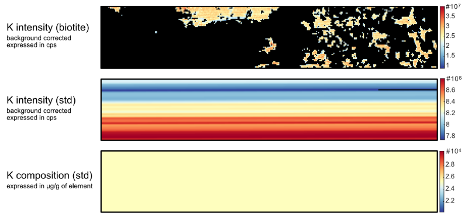

Help file version 03.12.2021 by M. Tedeschi & P. Lanari
Access XMapTools resources online
This part of XMapTools 4 is currently at level 3 of development (1, largely untested; 2, tested for a few cases; 3, tested and benchmarked; 4, publication quality).
Warning: the algorithm used to generate the maps from LA-ICPMS data is not yet published and evolves on a weekly basis. Therefore, it is strongly recommended to contact us if you want to publish trace element data generated with any beta version of XMapTools 4.
Table of content
Main steps
Detailed description
- Step 1: Load datafiles
- Step 2: Adjust time shift
- Step 3: Extract integrations & plot data
- Step 4: Apply background correction
- Step 5: Select primary standard
- Step 6: Select and check secondary standard
- Step 7: Generate map files
This help file contains a description of the Converter for LA-ICPMS data which can natively read data from AGILENT (mass spectrometer) and RESONETICS (log file).
Contact Pierre Lanari (pierre.lanari@geo.unibe.ch) if you want additional formats to be included in future releases.

Figure 1: Example of data generated with the Converter for LA-ICPMS Data. Left: Boron intensity map of the sample expressed in background-corrected intensity (cps). Middle: Boron intensity map of the primary reference material expressed in background-corrected intensity (cps). Right: Boron pseudo-map for the primary reference material expressed in µg/g.Press the button Load Datafiles  to select: (1) a data file from the mass spectrometer (AGILENT only) containing timestamps an intensity data (e.g. Data.csv), and immediately after (2) a corresponding log file (e.g. Log.csv) from the laser system (RESONETICS only).
to select: (1) a data file from the mass spectrometer (AGILENT only) containing timestamps an intensity data (e.g. Data.csv), and immediately after (2) a corresponding log file (e.g. Log.csv) from the laser system (RESONETICS only).
When the opening window pops-up select first 'Data.csv' and opened. After selecting this first file, the window pops-up again automatically and the file 'Log.csv.' can be selected and opened.
The value of the time shift can be adjusted to synchronise the data file and the log file. In the main figure, the total signal is plotted together with the laser on/off signals given in the log file.
The shift value is automatically adjusted by XMapTools when the data are imported. If necessary, adjust the value until both signals are synchronised (see example in Figure 1 bellow).
It is possible to zoom on the figure. Click on the Zoom in butto, or hold the pointer over the figure and locate the zoom button in the plot pannel that appears in the top right corner of the image. You can also pan over the plot by selecting the pan mode (hand button) in the plot pannel. Press the rest button to reset the display.

Once the value of the time shift is optimised, press the button Extract Integrations to automatically extract all analyses listed in the log file.
Then, you can use the dropdown menu Plot  located at the top right of the window to select the signal to be displayed in the main window (raw data for an element, the sum or all elements).
located at the top right of the window to select the signal to be displayed in the main window (raw data for an element, the sum or all elements).
The integrations for fitting a background corrections are automatically selected for each measurement listed in the log file. They are listed in a tree menu located on the left and can be plotted by selecting an item under the category Background
Note that the following categories are available in this tree menu:To visualise and edit integrations, select the first measurement in the tree menu. Zoom in on the first background signal using the zoom button available in the toolbar that is displayed on the top-right of the figure while the mouse is over it. If you pick an other measurement in the tree menu, the integration will be displayed in the center of the plot.
The program automatically excludes a fraction at the beginning and at the end of each background measurement (default filter value is 10 %). This value can be changed manually if needed. It is also possible to edit manually the duration of an integration by changing the boundary values available as Position (min and max), below the menu:
Once all integrations have been checked, you can press the restore view button of available in the plot toolbar (hold the mouse pointer on the plot and check in the upper right corner).
Note that you can press at any stage the button extract information to restore the auto integration intervals for background. Any change will be lost.
Select a method for fitting the background in the BACKGROUND section below the plot. It is recommended to display the signal Raw_Sum and to adjust the display to show the entire background signal.
The following functions are available:
Due to the compositional variability of each material analysed, an optimal background correction is usually obtained using a step function.
Press the button Apply to apply the background correction.

The background-corrected (BackCorr) signal is displayed once a background correction has been applied. Corrected data are available via the plot menu.
Select using the drop-down menu located in PRIMARY STANDARD, what measurement should be used as primary standart.
Warning: at the moment, the name of the measurement should match the name of a standard file containing the composition of this standard (NIST612 or GSD-1g). Additional standard files will be added in the future.
Integrations can be edited following the same strategy as for background integration (see above).
Select then a fitting method. A spline function is usually the best method to approximate instrument drift during measurement, especially for reconstructing maps. Step function can also be used in some cases, but it can result in sharp transition between lines in the final map.
Press the button Apply to validate and fit the primary standard signal. The program generates standard data such as shown in the second image of Figure 1. If the standard is not recognised automatically a window containing a list of all available standards will be opened. Note that it is possible to add additional standards using the option pannel available at the bottom left of the interface.

Select the measurements to be used as secondary standard using the dropdown menu located in SECONDARY STANDARD. Integrations can be edited following the same strategy as for background integration and primary standard (see above).
Select using the dropdown menu Int. Std an element to be used as a reference to calculate the composition of the secondary standard. This choice at this stage has no effect on the map calibration that is done in XMapTools (a different element can be used). But here, it is possible to quickly check the calibration using the secondary standard for several elements used as internal standard.
An example is shown in Figure 5 below.
Figure 5: Selection of a secondary standard and data quality check.The table shown in Figure 5 reports the average composition of the secondary material (integrated over all measurements) compared to the reference composition for all elements. The last column shows the difference between the measured and reference composition expressed in %.
The button Cal. Matrix generates a calibration matrix showing how the secondary standard matches the reference composition for any element selected as reference. An example is provided in Figure 6.
Pressing the button Apply ends this step.

Maps can be generated from raster measurements after correcting for background, fitting the primary and checking the secondary standard(s).
Select the raster measurements to be used to construct the map using the dropdown menu located in MAPS (SCANS). Integrations cannot be edited but a cycle shift can be applied in case of long transport time between the ablation cell and the mass spectrometer.
Press the button Apply to validate and generate the maps. Three buttons becomes available.
To use the data oin XMapTools, click on the button Import (Import Maps) available on the tab Project & Import.
After creating the maps, it is possible to calculate a new dataset using the same settings, if more than one dataset is available.